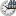
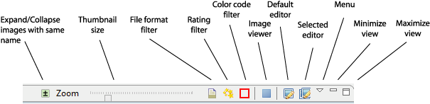

- Drag an external image file or folder into the gallery area. The file or folder will be imported into the catalog.
- Drag sound files onto a thumbnail. This will add a voice note to the image.
- Drag thumbnails from the gallery to the desktop or into an external folder. This will create a copy of the original image at the target destination.
- Drag thumbnails from the gallery into the slide show editor, the exhibition editor, or the web gallery editor. This will add the images to the slide show, the exhibition, or the web gallery.
- Full screen view. This will invoke an external viewer, or the internal viewer if no external viewer is defined. Pressing Shift or another modifier key at the same time will force the internal viewer. The modifier key determines the display modus.
- Edit. This will invoke the default editor associated with the images file type. If several images are selected, the editor is only invoked if it supports all the corresponding file types.
- Edit with. This will allow to select among all editors associated with the image file type. If several images are selected, only editors that are associated with all the corresponding file types are shown.
- Time search. Searches images within the same time window as the selected image. The size of the time window can be specified.
- Search similar. Performs a content based search vor images that are visually similar to the selected image or to a drawing.
- Proximity search. Search images that are in the vincinity of the selected images. A maximum distance can be specified.
- Voicenote, Textnote, Drawing.
This will show a dialog allowing you to instantly record a voice note,
to attach an existing sound file as a voice note, to remove an
existing voicenote, to edit a text note, or to create a overlayed drawing.
- Play voice note. This will play the voice note of the selected image.
- Copy metadata. Copies the meta data of the selected image into the clipboard.
- Paste metadata. Pastes meta data from the clipboard into the selected images. A dialog is shown allowing to select specific meta data.
- Relations>
- Show derivatives. Opens the Hierarchy view showing all images derived from the selected image.
- Show originals. Opens the Hierarchy view showing the images from which the selected image was derived.
- Show composites. Opens the Hierarchy view showing the images that were composed (panorama, photo montage, etc.) from the currently selected image.
- Show components. Opens the Hierarchy view showing the images that were used when the currently selected image was composed.
- Show folder (
 ). Opens the external folder where the image is located and selects this folder in the Catalog view and opens this collectiion, too.
). Opens the external folder where the image is located and selects this folder in the Catalog view and opens this collectiion, too. - Show in timeline (). Selects the timeline folder in the Catalog view where the image is located and opens this collectiion.
- Remove from album. This function is only available within albums and removes the selected images from the album.
- Select all. Selects all images in the gallery.
- Add bookmark. Adds a new bookmark to the list of bookmarks and opens the Bookmark view.
- Refresh... Updates the catalog entry of the selected images or of a selected collection.
- Retarget... Only available for orphaned catalog entries. In the following dialogs you retarget the selected catalolg entry (or all orphaned entries in the same folder) to another image file location.
- Rename... Used to rename one or several selected images with the help of a template. In contrast to renaming images during import, this function allows to include metadata into the filename.
- Declare named stack... Used to identify images as part of a stack. Using the provided stack name all selected images are renamed so that the filename contains both stack name and original image name. The purpose is to collapse those images in the gallery view. Typically used for series of images such as panoramas, exposure brackets, and so on.
- Delete. Deletes the selected images from the catalog. You may choose to delete the image file from disc as well.
You can access local menu functions by clicking the triangle symbol on the local toolbar.
- Full screen view. This will invoke an external viewer, or the internal viewer if no external viewer is defined. Pressing Shift or another modifier key at the same time will force the internal viewer. The modifier key determines the display modus.
- Edit. This will invoke the default editor associated with the images file type. If several images are selected, an editor will be selected that is associated with all the corresponding file types.
- Edit with. This will allow to select among all editors associated with the image file type. If several images are selected, only editors that are associated with all the corresponding file types are shown.
- Select.... This submenu leads to a whole array of selection functions.
Pressing Shift when invoking such a function will add the newly selected entries to the current selection. Pressing Alt will subtract from the current selection.
Note that selecting a huge number of images can slow down operation.
- Save Query as Collection. This function is only enabled after an Adhoc Query, a Keyword Query, a Proximity Query, or a Similarity Query has been executed. It will store this query as a root collection or sub collection under a new name and make it available in the Catalog view.

- File format (). Allows to select a filter for displaying selected file formats only. Typically this option is used to suppress the display of duplicates that exist in different file formats (e.g. Raw, DNG, TIFF).
- Rating (). Allows to select a filter for displaying only images with a specific rating (All, not rated, rated (0), below average or better (1), average or better (2), above average or better (3), good or better (4), excellent (5))
- Color code (). Allows to select a filter for displaying only images with the selected color code.
- Full screen view (). This will invoke an external viewer, or the internal viewer if no external viewer is defined. Pressing Shift or another modifier key at the same time will force the internal viewer. The modifier key determines the display modus.
- Edit (
 ).
This will invoke the default editor associated with the images file
type. If several images are selected, the editor is only invoked if it supports all the corresponding file types.
).
This will invoke the default editor associated with the images file
type. If several images are selected, the editor is only invoked if it supports all the corresponding file types. - Edit with (). This will allow to select among all editors associated with the image file type. If several images are selected, only editors that are associated with all the corresponding file types are shown.
- Add bookmark (). Adds a new bookmark to the list of bookmarks and opens the Bookmark view.
- Save Query as Collection (
 ). This function is only enabled after an Adhoc Query, a Keyword Query, a Proximity Query, or a Similarity Query has been executed. It will store this query as a root collection or sub collection under a new name and make it available in the Catalog view.
). This function is only enabled after an Adhoc Query, a Keyword Query, a Proximity Query, or a Similarity Query has been executed. It will store this query as a root collection or sub collection under a new name and make it available in the Catalog view.